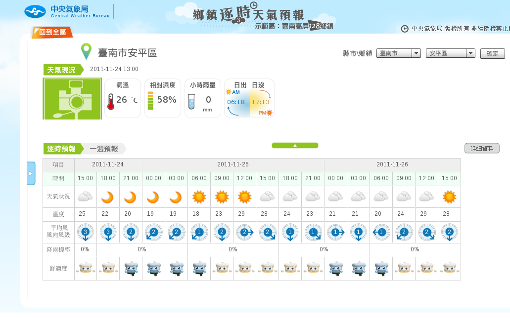

也紀念我們永遠的朋友 李士傑先生（Shih-Chieh Ilya Li）。
鄉鎮逐時天氣預報與開放資料
在開放資料的各種討論，氣象和交通資訊通常是最常被提及的資料類型。不只是因為這兩者所產出的資料，幾乎是所有民眾每日生活所需，而且由於資料本身的變異以及更新頻率相當的頻繁，在資料應用的方式以遊戲規則方面，也有不少的發展。
對於一般民眾而言，這是件好事。例如我們可以拜訪氣象局檢索旅遊地區隔日或是未來幾日的天氣預報，好比在台北的萬華區，最近的氣候狀況和南港區其實差異頗大。以往在網站上只能看到整個台北市的天氣預報，現在預報區域縮小，透過專業的氣象人員所產生的天氣預報（詮釋），參考價值應能得到有效提升。
▲ 氣象局鄉鎮逐時天氣預報網
不過所謂某個地區的「天氣資料」以往並不是不存在，但民眾無法順利取得。原因不少，但我猜想，主要是氣象局並沒有義務或政策依據必須提供民眾透過網站使用氣象預報資料（或產品）。在「發展鄉鎮逐時天氣預報系統計畫」的資料內我們可以看到，雖然這是民國 99 到 100 年中央氣象局主要的施政計畫之一，但預報資料要怎麼在網站上呈現，或是如何提供應用程式開發者一個合理的接取規則，顯然不在整體的考量範圍之內。我們看到的反而是資訊服務被放在「加強氣象服務與推廣氣象防災教育宣導」的章節，而且這也不是一朝一夕的狀況。
這不單是氣象局本身的問題，更進一步來看，這幾乎是所有擁有大量資料的政府機關的問題。就算退幾步來看，不要求提供以開發者為導向的資料接取服務，即便是一般民眾要檢閱現有的氣象資料產品，達到氣象局所謂「推廣」的目的，可是，氣象局的網站在親和度 (accessibility) 卻一直是詬病的指標之一。網頁充滿了未經全盤思考卻硬把資訊塞放在首頁的毛病，網頁資訊區塊成為高階長官在螢幕上「指指點點」的受害者。相對之下，日本的 www.tenki.jp 就清爽許多。
試想，氣象資訊的數量之多，異質性高，但又必須在效能、審美、人力、內部流程以及預算等各方考量，整合到同一個網站。這樣說起來，設計網站在開放資料各種討論當中，不是一門具體而且頗難的學問？
在政策和預算都無視網路已經是最主要資訊服務管道的此時，氣象局的網站氣象產品，也只是這些因素的果實罷了。網站服務既不是主要的業務，提供這項業務也需要相當的成本。若是民間的開發者想自行運用氣象站資料開發天氣的應用程式，也只能透過迂迴的方式達成。各相關業者對於氣象局網站（資料）的諸多抱怨，其來有自。
欣聞最近又有不少以「雲端」為名的聯盟競相成立，但在刻意忽略國家級氣象和交通資料服務的狀況下，雲端要算什麼，我認為大概只有行事（或形式、形勢）的算計層次而已。
Open Government Data 講座 @中研院！
十二月中旬，台灣創用CC 將會就 Open Government Data 議題，邀請政府相關機關、法律學者，以及民間推動者一起來對談。活動細節一旦確認就會即時公佈，歡迎對 Open Data 議題有興趣者來參加。
Special


Address：No.128, Sec.2, Academia Rd., Institute of Information Science, Academia Sinica, Nangang District, Taipei City 11529, Taiwan (R.O.C).
Privacy Policy. Terms-of-use